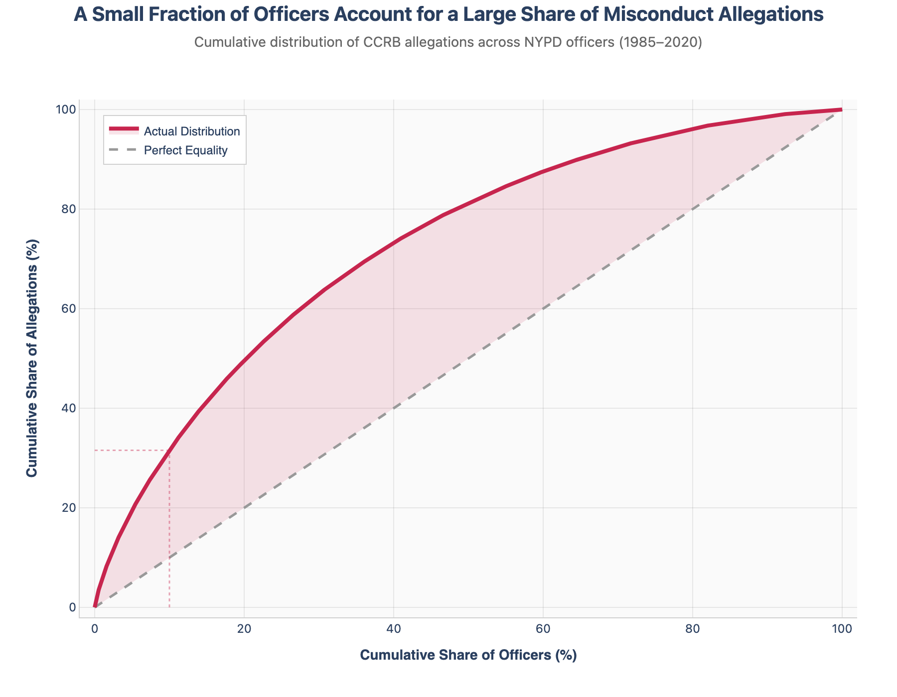
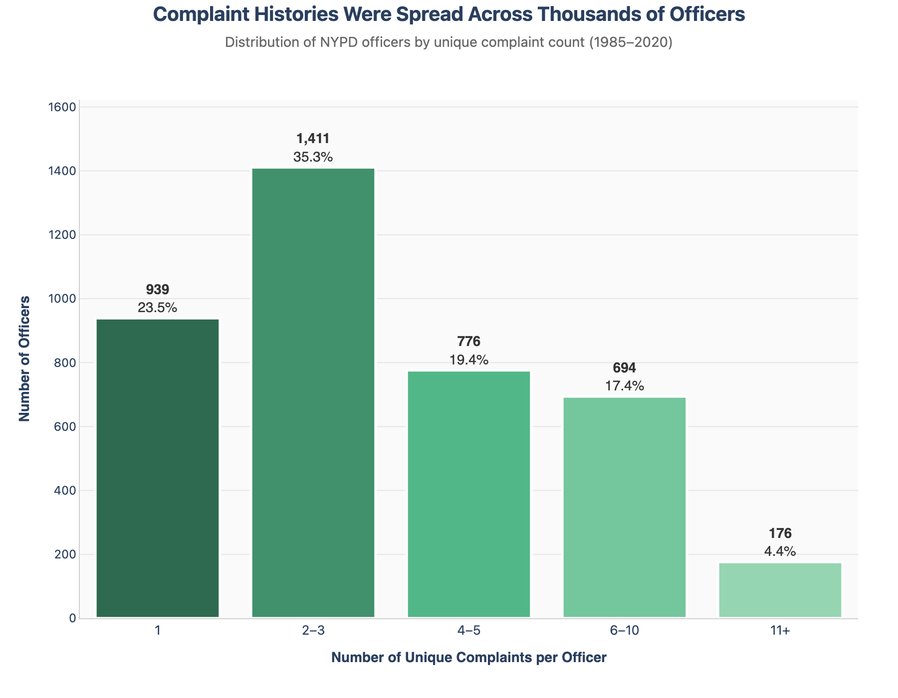

Proposition: A relatively small group of officers accounts for a disproportionate share of civilian misconduct allegations.
FOR the Proposition: A small subset of officers accounts for a very large share of allegations.

Design Decisions and Rationale:
- Decision 1: I used allegation rows per officer rather than unique complaints per officer. Score: -0.5. This makes the concentration pattern look stronger because a single complaint can produce multiple allegation records. I chose it because it supports the proposition more clearly, but it is only mildly deceptive since allegations are still part of the released dataset and are relevant to misconduct patterns.
- Decision 2: I used a cumulative concentration curve with a “Perfect Equality” reference line. Score: +1.5. This is a perceptually effective way to show how unevenly allegations are distributed. The comparison line makes the pattern immediately legible and helps the reader see that the observed distribution differs meaningfully from an equal distribution across officers.
- Decision 3: I used a strongly slanted title that foregrounds the takeaway before the reader examines the chart. Score: -1.0. The title tells the reader what conclusion to look for, which makes the visualization more persuasive. I considered using a more neutral title, but that would have weakened the rhetorical framing and made the chart feel more exploratory than argumentative.
AGAINST the Proposition: Allegations are more broadly distributed than the concentration framing suggests.

Design Decisions and Rationale:
- Decision 1: I switched from allegation rows to unique complaints per officer. Score: +1.0. This is a more conservative unit of analysis because it avoids counting multiple allegations from the same complaint separately. I used it because it softens the concentration pattern and supports the counterargument that complaint histories are distributed across many officers, but it is still fairly earnest since unique complaints are also a reasonable measure.
- Decision 2: I grouped complaint counts into broad bins (1, 2–3, 4–5, 6–10, 11+). Score: -0.5. Binning reduces attention to the long tail and makes the distribution feel more stable and less extreme. I chose these bins because they are easy to read and make the majority categories stand out, though the grouping does compress meaningful variation among officers with the highest counts.
- Decision 3: I did not specifically annotate or visually isolate the highest-count outliers. Score: -1.0. Leaving the 11+ category as just one bar among five helps avoid drawing too much attention to the extreme tail. This supports the counterargument effectively, but it is also a clear example of how omission can be persuasive without looking obviously deceptive at first glance.
Final Reflection
Working on these two visualizations made it clear how much control the designer has over the story the data tells. The underlying dataset never changed, but by switching the framing, aggregation, and chart type, I could make two very different arguments that both felt reasonable. The concentration curve made it immediately obvious that a relatively small share of officers accounted for a large share of allegations, especially when compared to the equality line. On the other hand, the distribution chart emphasized that most officers had only a few complaints, which made the system appear more broadly distributed rather than concentrated among a small group. Neither visualization was false, but each highlighted different aspects of the same reality.
What surprised me most was how subtle many of these decisions were. Choices like binning ranges, selecting the unit of analysis, or emphasizing certain reference points did not feel deceptive while I was making them, but they clearly shaped the takeaway. It made me realize that most misleading visualizations are not the result of obvious manipulation, but rather a series of reasonable decisions that collectively push the viewer toward a specific interpretation. I think ethical visualization is less about avoiding persuasion entirely and more about being aware of how your choices influence interpretation. This assignment made that influence very tangible, because I could see how easily the narrative shifted even when working with the exact same data.